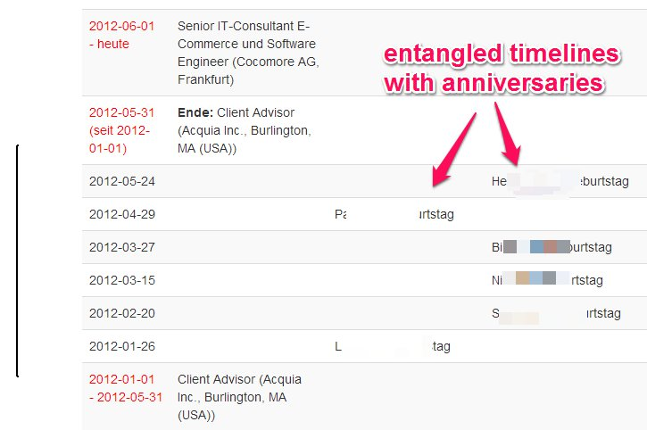
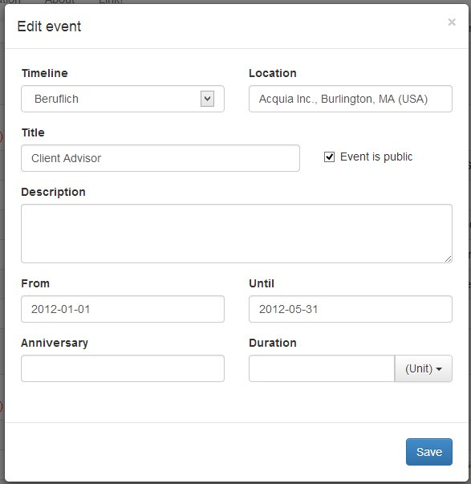
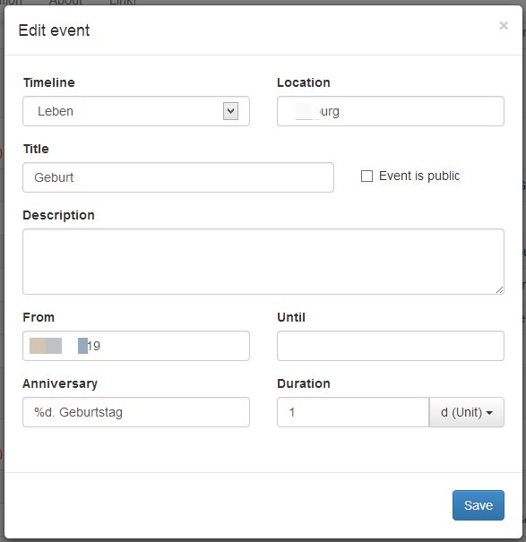
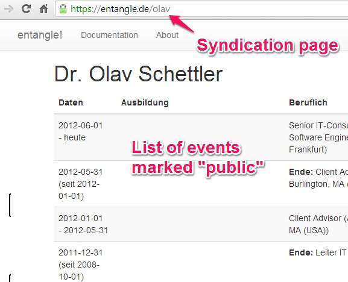

{{ page.title }}
entangle! implements federated timelines. It allows you to describe events in your life and arrange them in different, named timelines.
By default, timelines are private. However, you can mark events as public. Timelines with public events show these events to anonymous visitors.
You can merge timelines in an entangle! view. Events are shown on their respective timelines and are sorted chronologically.

Events have a start date and either an end date or a duration, specified in days, months or years. Events that last longer than a single day have their start and end dates on the timeline. Both dates are graphically connected by a bracket spanning from start to end.

Dates can be specified precisely or by giving only year and month or year alone. Events can be marked as anniversary. In this case, the yearly events are included on the timeline and can be formatted to show the ordinal number, e.g. event "Tim's Birth" and anniversaries "Tim's 2nd Birthday".

Events are associated with
locations, named entities with longitute and latitude. Locations are shown in parentheses after an event title on the timelines.
Events can be marked as public. Public events are listed on the syndication page for a particular user. A first version of entanglement is implemented by the capability to replicate timelines with public events into a user's own set of timelines. More elaborate forms of syndication are planned.

entangle! is also open source software. You are encouraged to try tthe PHAR archive or install it from the Github repository (https://github.com/oschettler/entangle) and run it on your own server. It is implemented in PHP5 and needs an SQlite database to run.